Clonar: permite duplicar o eliminar partes de una imagen. Podemos ver cómo la primera imagen de cada tipo está sin editar.
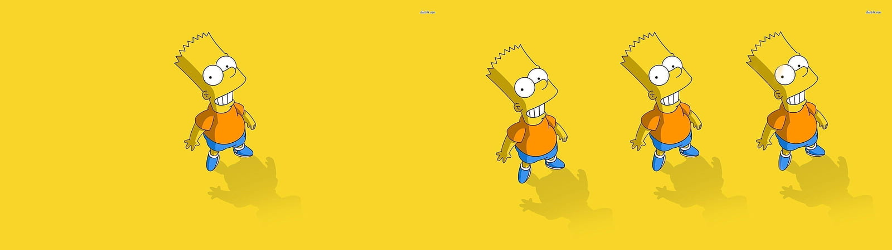Eliminar imperfecciones: permite corregir pequeñas imperfecciones. La primera imagen está sin editar.
Práctica 1:
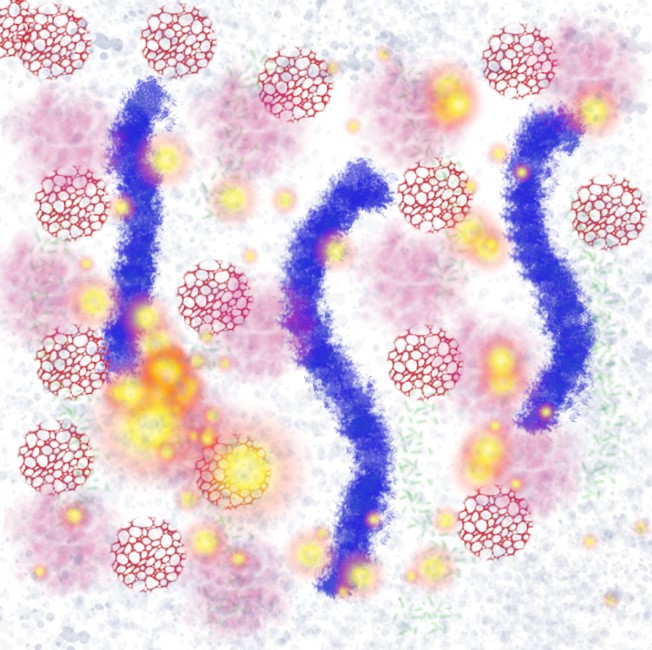Práctica 2:
Original
Mosaico de papel
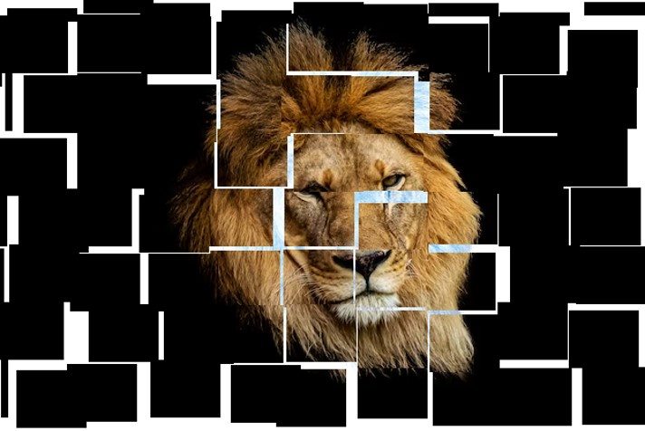Redondear bordes
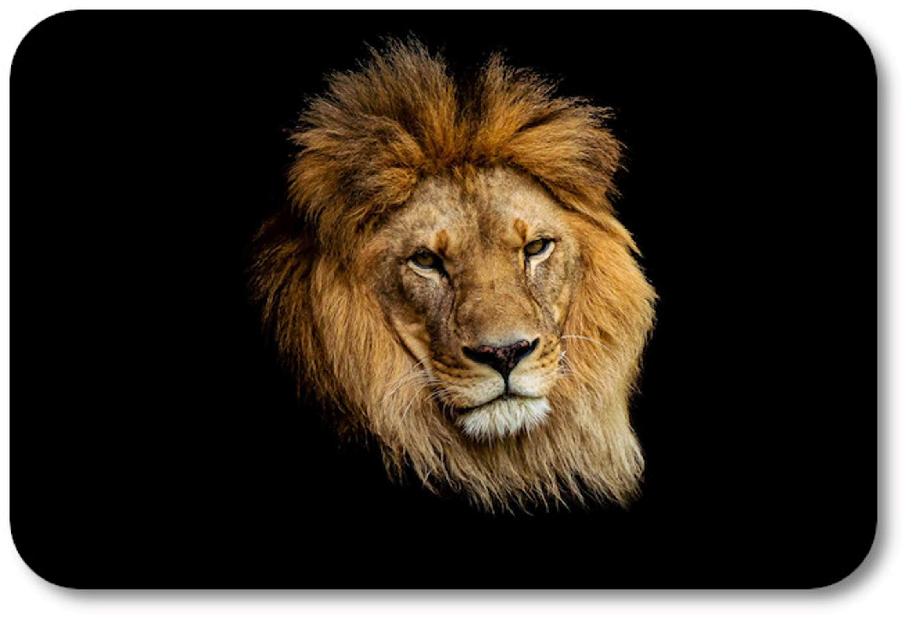Difuminar borde
Película
Práctica 3:
Original
Imagen editada
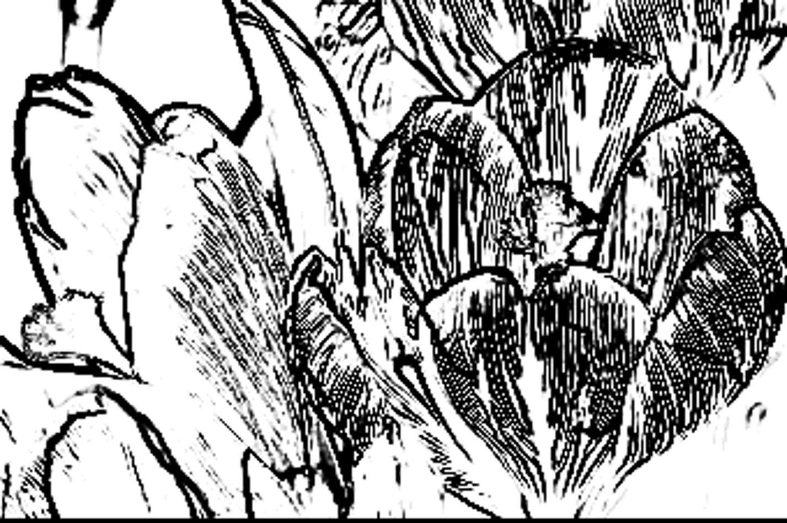En esta imagen podemos ver un ejemplo de fotomontaje. En este caso, hemos añadido un pájaro, un barco, un árbol y un avión a un fondo o paisaje.
 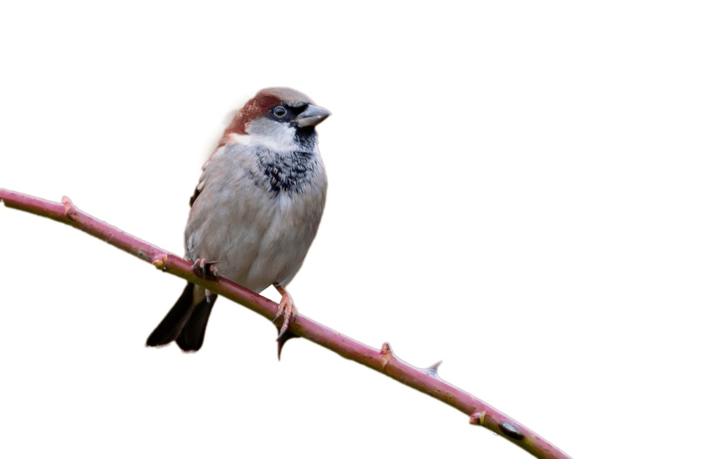
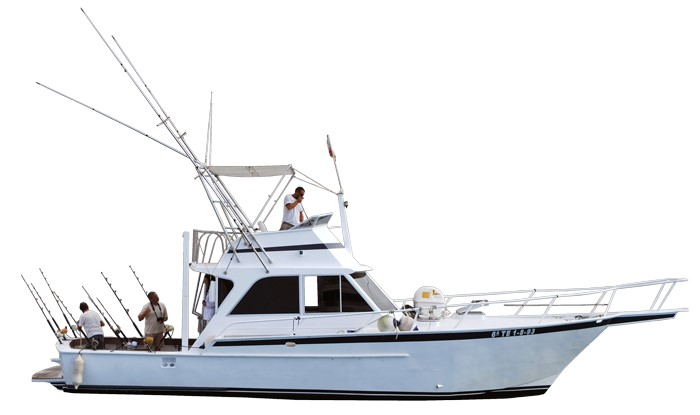
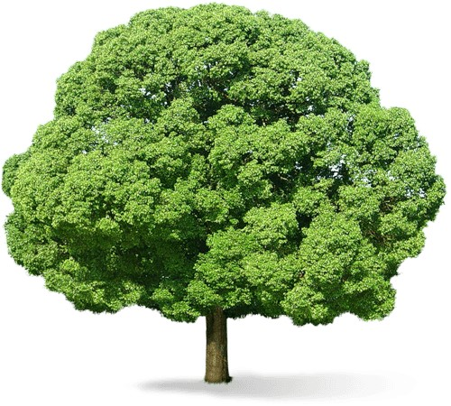
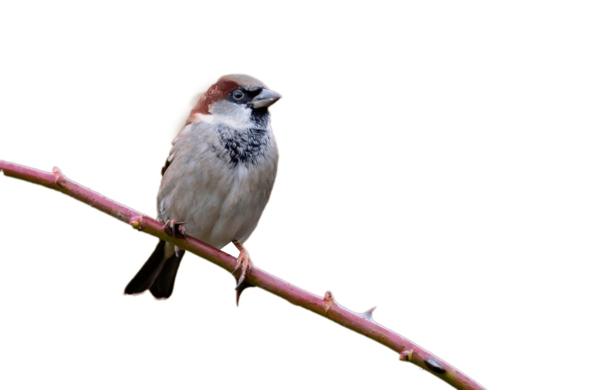
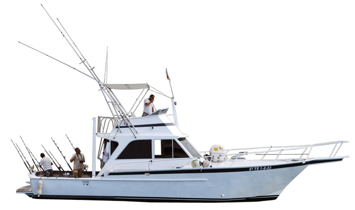
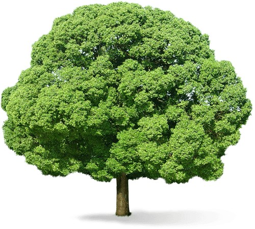
El resultado final:
Copyright 2023, all rights reserved